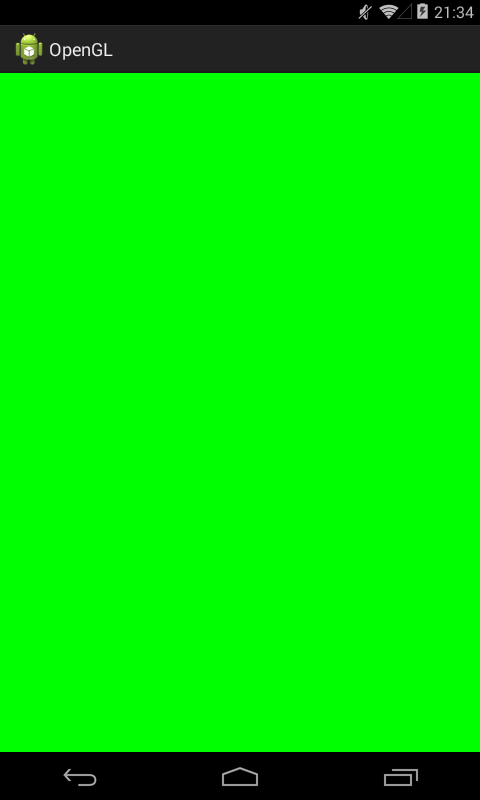

В этом уроке:
- создаем простейший пример с OpenGL
Продолжаем тему графики, и переходим на следующий уровень, который называется OpenGL ES. Расшифровывается это как OpenGL for Embedded Systems, т.е. OpenGL для встраиваемых систем (android-девайсы в нашем случае).
Пару лет назад я читал книгу по этой теме, делал из нее примеры и, в целом, без особых проблем понял, все что там было написано. Но та книжка была по OpenGL ES версии 1.0. Cейчас эта версия уже устарела и используются версии 2.0, 3.0 и 3.1. Эти версии по API существенно отличаются от 1.0 и несовместимы с ней. Поэтому мне самому придется изучать тему почти заново.
Первый урок будет похож на Урок 141. Мы выполним минимальный набор действий, чтобы заполнить экран каким-либо цветом, но в этот раз сделаем это с помощью OpenGL. Кстати, сразу хочу предупредить, что OpenGL это не обязательно 3D. Сначала мы немного порисуем 2D, а потом добавим объем.
Ну и как обычно, поначалу, скорее всего, мало что будет понятно, но по мере погружения в тему общая картина будет проясняться.
Приступим к созданию нашего первого минимального примера. Обсудим его ключевые элементы.
1) Изображение надо на чем-то показывать. Для этого мы будем использовать компонент GLSurfaceView (далее - surface).
2) Изображение кто-то должен создавать, т.е. принимать от нас инструкции, что и как рисовать. Этим будет заниматься Renderer (далее - рендер).
3) Ну и нужна будет проверка, что девайс поддерживает OpenGL 2.0, иначе ничего не будет работать.
Начнем с создания класса рендера. Объект этого рендер-класса мы потом будем передавать в surface, которое в процессе своей работы будет вызывать методы рендера.
Рендер имеет три метода:
onSurfaceCreated - вызывается при создании/пересоздании surface. Т.е. метод будет вызываться при запуске приложения или, например, в уже запущенном приложении при выходе девайса из сна. Здесь будет выполняться установка OpenGL параметров и инициализация графических объектов.
onSurfaceChanged - вызывается при изменении размера surface. Самый распространенный пример - смена ориентации экрана.
onDrawFrame - вызывается, когда surface готово отобразить очередной кадр. В этом методе мы и будем создавать изображение.
Создаем класс OpenGLRenderer, который реализует интерфейс Renderer:
import javax.microedition.khronos.egl.EGLConfig;
import javax.microedition.khronos.opengles.GL10;
import static android.opengl.GLES20.GL_COLOR_BUFFER_BIT;
import static android.opengl.GLES20.glClear;
import static android.opengl.GLES20.glClearColor;
import static android.opengl.GLES20.glViewport;
import android.opengl.GLSurfaceView.Renderer;
public class OpenGLRenderer implements Renderer
{
@Override
public void onDrawFrame(GL10 arg0)
{
glClear(GL_COLOR_BUFFER_BIT);
}
@Override
public void onSurfaceChanged(GL10 arg0, int width, int height)
{
glViewport(0, 0, width, height);
}
@Override
public void onSurfaceCreated(GL10 arg0, EGLConfig arg1)
{
glClearColor(0f, 1f, 0f, 1f);
}
}
В onSurfaceCreated мы вызываем метод glClearColor и передаем ему RGBA-компоненты в диапазоне от 0 до 1. Тем самым мы устанавливаем дефолтный цвет, который будет отображаться после полной очистки surface.
А в методе onDrawFrame мы как раз выполняем эту очистку. Метод glClear с параметром GL_COLOR_BUFFER_BIT очистит все цвета на экране, и установит цвет, заданный методом glClearColor.
В методе onSurfaceChanged мы методом glViewPort задаем область surface, которая будет доступна для вывода изображения. Мы указываем левую нижнюю точку - (0,0) и размеры области - (width, height), т.е. изображение будет выведено на все surface.
Рендер готов. Теперь надо в Activity повесить surface и настроить его.
import android.app.Activity;
import android.app.ActivityManager;
import android.content.Context;
import android.content.pm.ConfigurationInfo;
import android.opengl.GLSurfaceView;
import android.os.Bundle;
import android.widget.Toast;
public class MainActivity extends Activity
{
private GLSurfaceView glSurfaceView;
@Override
protected void onCreate(Bundle savedInstanceState)
{
super.onCreate(savedInstanceState);
if (!supportES2())
{
Toast.makeText(this, "OpenGl ES 2.0 is not supported", Toast.LENGTH_LONG).show();
finish();
return;
}
glSurfaceView = new GLSurfaceView(this);
glSurfaceView.setEGLContextClientVersion(2);
glSurfaceView.setRenderer(new OpenGLRenderer());
setContentView(glSurfaceView);
}
@Override
protected void onPause()
{
super.onPause();
glSurfaceView.onPause();
}
@Override
protected void onResume()
{
super.onResume();
glSurfaceView.onResume();
}
private boolean supportES2()
{
ActivityManager activityManager =
(ActivityManager) getSystemService(Context.ACTIVITY_SERVICE);
ConfigurationInfo configurationInfo = activityManager.getDeviceConfigurationInfo();
return (configurationInfo.reqGlEsVersion >= 0x20000);
}
}
В onCreate мы сначала нашим методом supportES2 определяем, что девайс поддерживает OpenGL ES 2.0 и выше. Если нет, то закрываемся.
Если же все ок, то
- создаем GLSurfaceView,
- методом setEGLContextClientVersion говорим ему, что будем использовать OpenGL ES версии 2
- методом setRenderer передаем экземпляр нашего класса OpenGLRenderer. Теперь этот рендер будет отвечать за то, что будет нарисовано на surface
- методом setContentView ставим surface как основное View для Activity
Кроме этого, необходимо привязать surface к lifecycle-методам Activity: onPause и onResume, вызвав в них одноименные surface-методы.
Все готово. Запускаем

Экран заполнен зеленым цветом. Первое простейшее OpenGL-приложение готово. Не Need For Speed конечно, но с чего то ж надо начинать )
Три момента, на которых я хотел бы еще остановиться
1) Почему-то не работает alpha-компонент в методе glClearColor. Т.е. передаете последним параметром хоть 0 хоть 1, прозрачность не добавляется. На этот вопрос у меня пока ответа нет.
2) Координаты viewport, которые мы задаем методом glViewport никак не влияют на результат, и даже если задать область viewport только в половину surface, все равно в зеленый цвет будет закрашена все surface. По этому поводу я вычитал, что это норма. Метод glClear работает на все surface, независимо от размера viewport.
3) По поводу запуска приложений. Обычно пишут, что OpenGL ES не пашет на эмуляторах. Я не проверял на стандартном эмуляторе, но на Genymotion запуcкается без проблем. На крайняк всегда есть реальный девайс, можно тестить на нем.